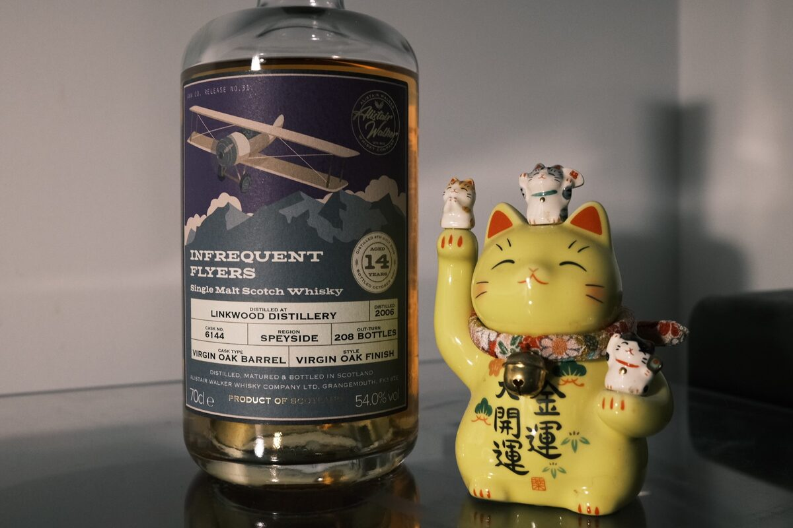

Linkwood 2006 Infrequent Flyers 14 years 54% (virgin oak barrel)
Linkwood, this time in virgin oak. Usually I leave this sort of cask for our friends in America…
Colour Gold.
Nose Vanilla, coconut, raw sugar. Apple juice – quite juicy. Coconut biscuits. Toffee. A little oak, greenness, floral. With water, clearer now: lamingtons, perhaps peanuts too.
Palate Thick and oily mouthfeel. Bright, a squeeze of lemon and lime juice and lemon peels. Cherries and jellies. Malty. Vanilla and oak, some greenness, aperitif-like. With water, the balance between acidity and sweetness impresses, very floral, bananas. A little more oak.
Finish Herbaceous and green, a little minty, menthol. Boiled lollies and vanilla bean ice cream. A heavy cake. With water, lingering sweetness, lemon candies, sweetened milk tea. Cinnamon. Long and hot.
Comments I was worried the virgin oak might overpower, but this is balanced on the head of a pin. Certainly some flavours par for the cask, but Linkwood is still there. 89/100.

Posted by Dominic on 17 Jun 2021